函数基础
函数的定义
def 函数名(参数)：
pass
return 表达式
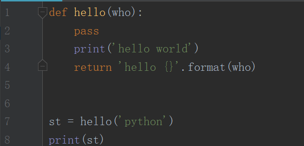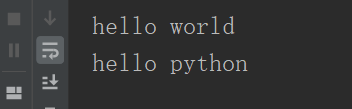
pass在这里表示什么都没有，不执行任何操作
return 后面可以返回任意表达式，但不能是赋值语句
return没有写返回值的话，默认None
return 和 print 的区别
return是函数的返回值，返回值可以赋值给变量
而print只是打印出来
函数名命名规则
字母、数字和下划线组成，和变量命名规则一致
函数调用
函数名(参数)
函数参数
定义参数
必备参数 （在函数调用的时候，必备参数必须要传入，也叫位置参数）
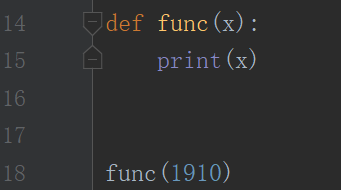
默认参数 （在函数调用的时候，默认参数可以不传入值，不传入值时，会使用默认参数）
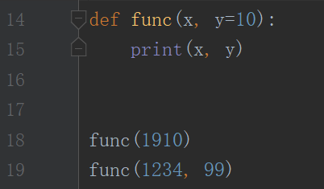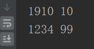
不定长参数 （在函数调用的时候，不定长参数可以不传入，也可以传入任意长度。其中定义时，元组形式可以放到参数最前面，字典形式只能放到最后面）
*args ：字典以外的参数 **kwargs ：字典参数
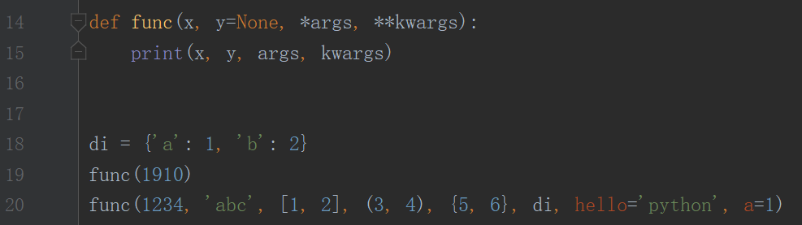
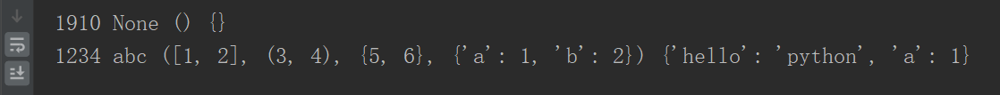
参数的调用
位置参数（必备参数）、关键字参数、在函数内直接使用
在python中参数 无类型，参数可以接受 任意对象，只有函数中代码才会对参数类型有限
内置函数（了解）
内置对象查看：dir(_builtins_)
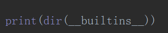
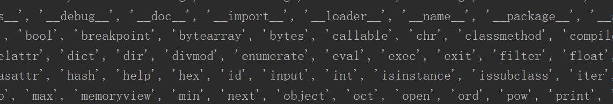
简单内置函数
常见函数：len 求长度 min 求最小值 max 求最大值 sum 求和 sorted 正向排序 reversed 反向---不是倒序（返回一个对象，要用list()或者tuple()去转换它的类型）
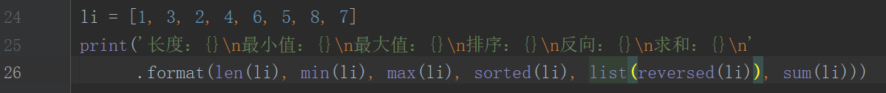
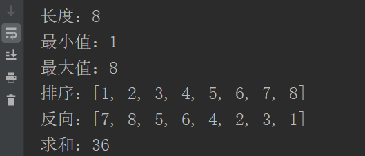
进制转换函数：bin 转换为二进制 oct 转换为八进制 hex 转换为十六进制 ord 字符转ASCII码 chr ASCII码转字符
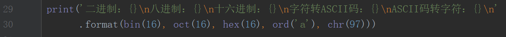
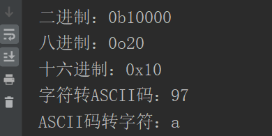
高级内置函数
enumerate 返回一个可以枚举的对象（将对应的索引和值取出来放在一起）
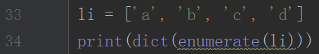
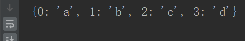
eval 取出字符串中的内容 将字符串str当成有效的表达式来求值并返回计算结果
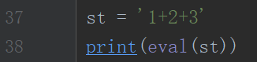
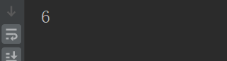
exec 执行字符串编译过的字符串
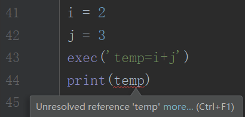
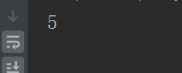
filter（函数，序列） 过滤器 将序列的每个元素作为参数传递给函数进行判断，然后返回 True 或 False，最后将返回 True 的元素放到新列表中
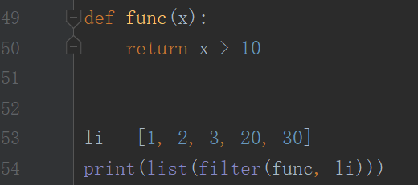
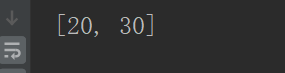
map(方法名，可迭代参数) 对于参数iterable中的每个元素都应用fuction函数，并将结果作为列表返回
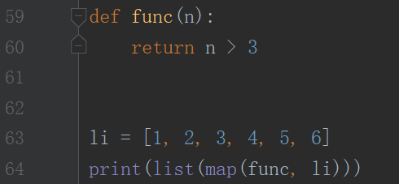
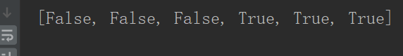
zip 将对象逐一配对（多出的元素、不进行配对）
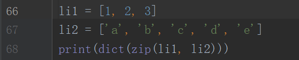
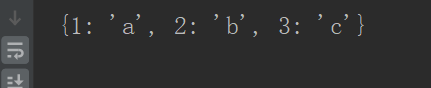